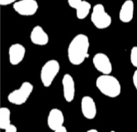
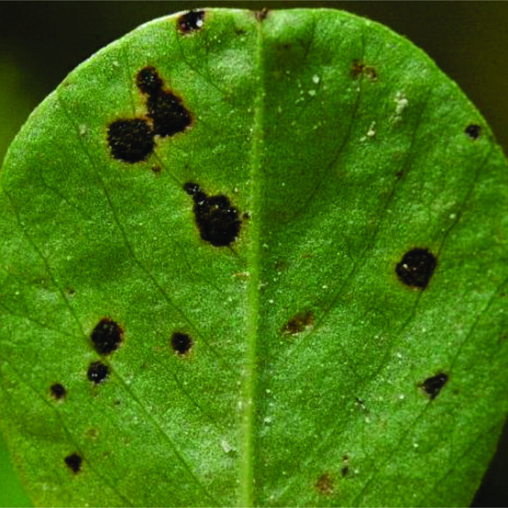
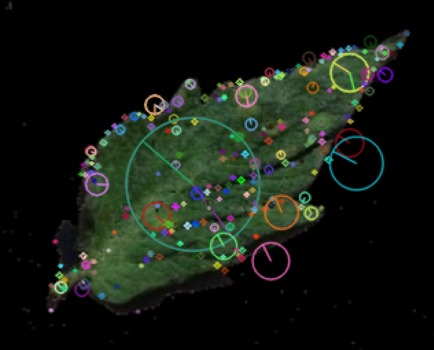

Medical Image Segmentation Using Advanced Attention UNet
Authors: Rikathi Pal, Somoballi Ghoshal, Amlan Chakrabarti
Conference: ICDMAI 2025
2nd Best Paper Award
Open PDF

MobileResNet: A Generalized Lightweight Model for Accurate Leaf Disease Detection Across Diverse Plant Types
Authors: Rikathi Pal, Somoballi Ghoshal, Amlan Chakrabarti
Conference: INDICON 2024
Open PDF

A Novel Feature Extraction Model for the Detection of Plant Disease from Leaf Images in Low Computational Devices
Authors: Rikathi Pal, Anik Basu Bhaumik, Arpan Murmu, Sanoar Hossain, Biswajit Maity, Soumya Sen
Conference: ICSTA 2023
Open PDF